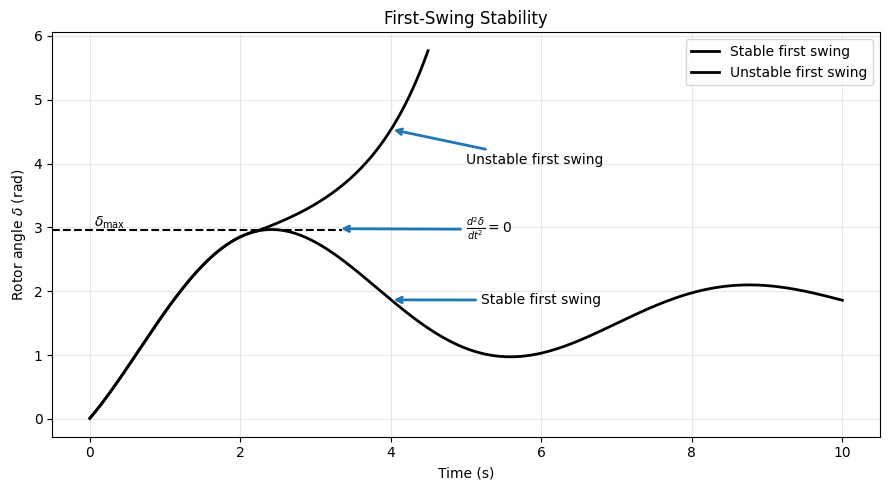
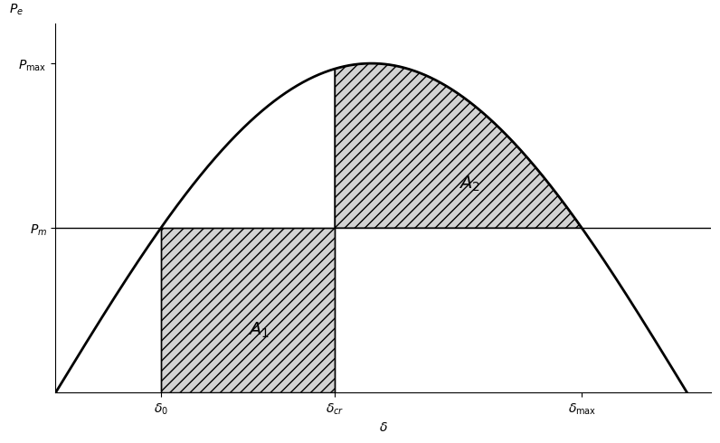
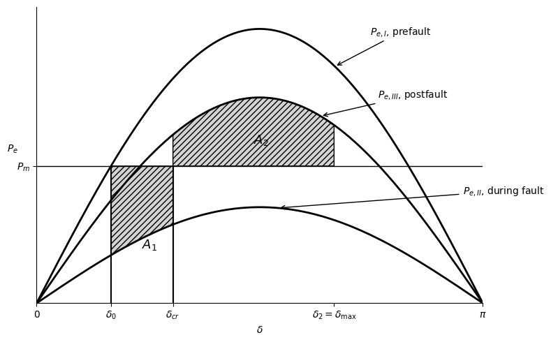
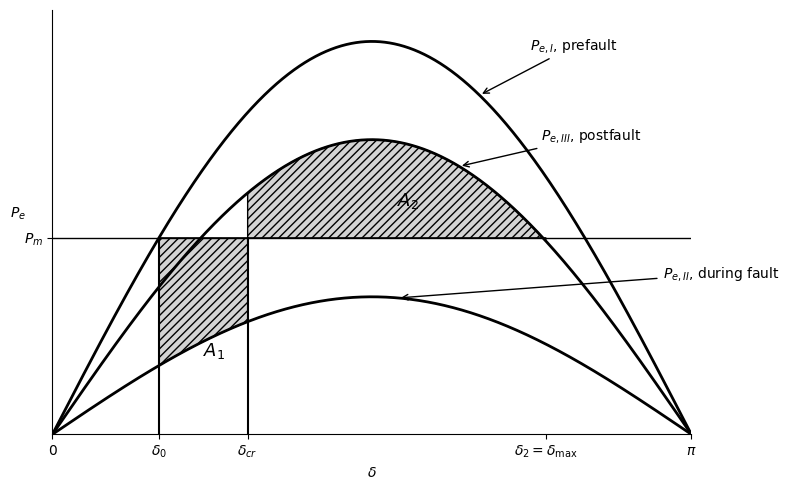

Likevektsarealkriteriet - Equal Area Criterion#
Likevektsaralkriteriet, bedre kjent som Equal Area Criterion (EAC), heretter EAC, er en grafisk metode som gjør det mulig å avgjøre transient stabilitet for et system modellert som SMIB, utifra et simplet kriterie uten å løse komplekse svingeligninger numerisk. EAC avgjør om et system klarer å hente seg inn etter en større forstyrrelse, førstesvingstabilitet, og bevare synkronismen. Klarer ikke systemet å hente seg inn etter første sving, er systemet ustabilt og generatoren faller ut av synkronisme.
Svingeligningen#
Vi betrakter svingeligningen.
Vi vet at \(M = \frac{H}{\pi f} \quad \text{ved per unit}\)
Siden H, og f er konstanter, ser vi på når den (andre)deriverte av rotorvinkelen er null. Fra dette definerer vi følgende kriterie for stabilitet; Systemet er stabilt hvis over tid (1 sekund er tilstrekkelig):
og ustabilt om:

Modifiserer svingeligningen#
Vi tar utgangspunkt i svingeligningen for å omgjøre den til en enkel applikerbar form til å avgjøre stabilitet.
og ser på \(\frac{d^2\delta}{dt^2}\):
Vi multipliserer begge sider med \(\big(2\frac{d\delta}{dt}\big)\):
Gjenkjenner kjerneregelen når u er satt til \(\frac{d\delta}{dt}\)
Gnager med dt på hver side:
Integrerer
eller
Evalueres ved 0#
Evaluerer uttrykket ved 0
eller integralet
Likearealkriteriet#
Stabilitetsbetingelsen kan uttrykkes slik: Systemet er stabilt dersom arealet under kurven for akselererende effekt \(P_a\) som funksjon av rotorvinkelen \(\delta\) blir null ved en bestemt verdi av \(\delta\).
Med andre ord må det positive arealet (akselerasjonsarealet) være lik det negative arealet (deakselerasjonsarealet). Derfor kalles dette likearealkriteriet (equal area criterion) for stabilitet.
Etter en forstyrrelse vil generatoren først akselerere slik at rotorvinkelen \(\delta\) øker. Arealet
representerer den kinetiske energien som lagres i rotoren under akselerasjonen.
For at systemet skal forbli stabilt, må denne energien senere fjernes gjennom en periode med negativ akselererende effekt (\(P_a < 0\)). Dette gir et deakselerasjonsareal
Første sving er stabil dersom
Når de to arealene er like store, blir rotorhastigheten igjen lik synkronhastigheten, og maskinen forblir i synkronisme med nettet.
Likt areal-kriteriet kan derfor oppsummeres som
eller ekvivalent
Dette er grunnlaget for likearealkriteriet (equal area criterion) ved analyse av transient stabilitet.
δ0 = 30.00°
δcr = 79.56°
δmax = 150.00°
A1 = 0.432510
A2 = 0.432510

Utledning av kritisk utkoblingsvinkel#
Akselerasjonsarealet er
Retardasjonsarealet er
Integrerer leddvis:
For første integral:
slik at
For det andre integralet:
slik at
Dermed blir
Likearealkriteriet krever at
Setter inn uttrykkene for \(A_1\) og \(A_2\):
Utvider høyresiden:
Leddet \(P_m\delta_{cr}\) finnes på begge sider og kanselleres:
Flytter \(P_m\delta_{\max}\) til venstre:
Dividerer med \(P_{\max}\):
og løser for \(\cos\delta_{cr}\):
For tilfellet med en terminalkortslutning hvor
under feilen, er
og
Setter vi dette inn, får vi
slik at
Alle vinkler i denne formelen må uttrykkes i radianer.
Kritisk utkoblingstid#
Svingligningen kan skrives som
Dermed blir akselerasjonen konstant:
Integrasjon med
gir
Når
oppnås den kritiske utkoblingstiden
hvor alle vinkler må uttrykkes i radianer.
import numpy as np
def critical_clearing(Pm, Pmax, H, f=50):
"""
Kritisk utkoblingsvinkel og kritisk utkoblingstid
for tilfellet Pe = 0 under feilen.
"""
delta0 = np.arcsin(Pm / Pmax)
delta_cr = np.arccos(
(np.pi - 2 * delta0) * np.sin(delta0)
- np.cos(delta0)
)
t_cr = np.sqrt(
(2 * H / (np.pi * f * Pm))
* (delta_cr - delta0)
)
return delta0, delta_cr, t_cr
# Eksempel
delta0, delta_cr, t_cr = critical_clearing(
Pm=1.0,
Pmax=2.10,
H=5.0,
f=50
)
print(f"δ0 = {np.degrees(delta0):.2f}°")
print(f"δcr = {np.degrees(delta_cr):.2f}°")
print(f"tcr = {t_cr:.4f} s")
δ0 = 28.44°
δcr = 81.72°
tcr = 0.2433 s
Likearealkriteriet for en ikke-null feilkurve#
Dette er utledningen av likearealkriteriet for en ikke-null feilkurve \(P_{e,II}\), i motsetning til det tidligere tilfellet hvor \(P_e=0\) under feilen.


Anvendelse av likearealkriteriet#
Ved å anvende likearealkriteriet, \(A_1 = A_2\), på tilfellet med kritisk utkoblingsvinkel kan vi skrive
der
Integrasjon av begge sider gir
Ved innsetting av integrasjonsgrensene får vi
De to leddene som inneholder \(P_m\) kan slås sammen:
Samler vi leddene som inneholder \(\cos\delta_{cr}\), får vi
Ved å multiplisere begge sider med \(-1\) fås
Dermed blir uttrykket for den kritiske utkoblingsvinkelen
Dette uttrykket benyttes for å beregne den kritiske utkoblingsvinkelen når den elektriske effekten under feilen ikke er null, altså når effekt-vinkelkurven under feilen fortsatt er gitt ved
import numpy as np
Pm = 1 # Mechanical power
Pmax_II = 0.8 # During fault
Pmax_III = 1.5 # Postfault
delta0_deg = 28.44 # Initial load angle [deg]
# Convert to radians
delta0 = np.radians(delta0_deg)
# Maximum rotor angle
# δmax = π - asin(Pm/PmaxIII)
delta_max = np.pi - np.arcsin(Pm / Pmax_III)
# Critical clearing angle
# From Equation (?)
numerator = (
Pm * (delta_max - delta0)
- Pmax_II * np.cos(delta0)
+ Pmax_III * np.cos(delta_max)
)
denominator = Pmax_III - Pmax_II
delta_cr = np.arccos(numerator / denominator)
# --------------------------------------------------
# Results
# --------------------------------------------------
print(f"δ0 = {np.degrees(delta0):.2f}°")
print(f"δmax = {np.degrees(delta_max):.2f}°")
print(f"δcr = {np.degrees(delta_cr):.2f}°")
δ0 = 28.44°
δmax = 138.19°
δcr = 82.28°